Web Server Statistics for sparrownodes.com
Web Server Statistics for sparrownodes.com
Program started on Wed, Apr 30 2025 at 8:47 AM.
Analyzed requests from Mon, Feb 17 2025 at 10:49 AM to Wed, Apr 30 2025 at 7:12 AM (71.85 days).
Web Server Statistics for sparrownodes.comProgram started on Wed, Apr 30 2025 at 8:47 AM.
Analyzed requests from Mon, Feb 17 2025 at 10:49 AM to Wed, Apr 30 2025 at 7:12 AM (71.85 days).
(Go To: Top | General Summary | Monthly Report | Daily Summary | Hourly Summary | Domain Report | Organization Report | Failed Referrer Report | Referring Site Report | Browser Report | Browser Summary | Operating System Report | Status Code Report | File Size Report | File Type Report | Directory Report | Request Report)
Figures in parentheses refer to the 7-day period ending Apr 30 2025 at 8:47 AM.
Successful requests: 6,338 (165)
Average successful requests per day: 88 (23)
Successful requests for pages: 2,108 (140)
Average successful requests for pages per day: 29 (19)
Failed requests: 3,083 (4)
Redirected requests: 1 (0)
Distinct files requested: 883 (1,358)
Distinct hosts served: 1,096 (1,651)
Data transferred: 114.24 megabytes (1.45 megabytes)
Average data transferred per day: 1.59 megabytes (211.89 kilobytes)
(Go To: Top | General Summary | Monthly Report | Daily Summary | Hourly Summary | Domain Report | Organization Report | Failed Referrer Report | Referring Site Report | Browser Report | Browser Summary | Operating System Report | Status Code Report | File Size Report | File Type Report | Directory Report | Request Report)
Each unit ( ) represents 25 requests for pages or part thereof.
) represents 25 requests for pages or part thereof.
| month | #reqs | #pages | |
|---|---|---|---|
| Feb 2025 | 2700 | 624 |   |
| Mar 2025 | 2697 | 841 |   |
| Apr 2025 | 941 | 643 | |
Busiest month: Mar 2025 (841 requests for pages).
(Go To: Top | General Summary | Monthly Report | Daily Summary | Hourly Summary | Domain Report | Organization Report | Failed Referrer Report | Referring Site Report | Browser Report | Browser Summary | Operating System Report | Status Code Report | File Size Report | File Type Report | Directory Report | Request Report)
Each unit () represents 10 requests for pages or part thereof.
| day | #reqs | #pages | |
|---|---|---|---|
| Sun | 1229 | 276 |  |
| Mon | 1287 | 314 | |
| Tue | 402 | 330 | |
| Wed | 441 | 287 | |
| Thu | 418 | 267 | |
| Fri | 2137 | 373 | |
| Sat | 424 | 261 | |
(Go To: Top | General Summary | Monthly Report | Daily Summary | Hourly Summary | Domain Report | Organization Report | Failed Referrer Report | Referring Site Report | Browser Report | Browser Summary | Operating System Report | Status Code Report | File Size Report | File Type Report | Directory Report | Request Report)
Each unit () represents 4 requests for pages or part thereof.
| hour | #reqs | #pages | |
|---|---|---|---|
| 0 | 94 | 61 | |
| 1 | 69 | 51 | |
| 2 | 105 | 69 | |
| 3 | 138 | 88 | |
| 4 | 99 | 66 | |
| 5 | 1786 | 135 | |
| 6 | 72 | 58 | |
| 7 | 95 | 83 | |
| 8 | 60 | 55 | |
| 9 | 61 | 48 | |
| 10 | 101 | 93 | |
| 11 | 340 | 140 | |
| 12 | 115 | 77 | |
| 13 | 137 | 110 | |
| 14 | 1058 | 151 | |
| 15 | 115 | 105 | |
| 16 | 102 | 77 | |
| 17 | 128 | 75 | |
| 18 | 147 | 61 | |
| 19 | 111 | 81 | |
| 20 | 152 | 129 | |
| 21 | 949 | 99 | |
| 22 | 238 | 138 | |
| 23 | 66 | 58 | |
(Go To: Top | General Summary | Monthly Report | Daily Summary | Hourly Summary | Domain Report | Organization Report | Failed Referrer Report | Referring Site Report | Browser Report | Browser Summary | Operating System Report | Status Code Report | File Size Report | File Type Report | Directory Report | Request Report)
Listing domains, sorted by the amount of traffic.
| #reqs | %bytes | domain |
|---|---|---|
| 6338 | 100% | [unresolved numerical addresses] |
(Go To: Top | General Summary | Monthly Report | Daily Summary | Hourly Summary | Domain Report | Organization Report | Failed Referrer Report | Referring Site Report | Browser Report | Browser Summary | Operating System Report | Status Code Report | File Size Report | File Type Report | Directory Report | Request Report)
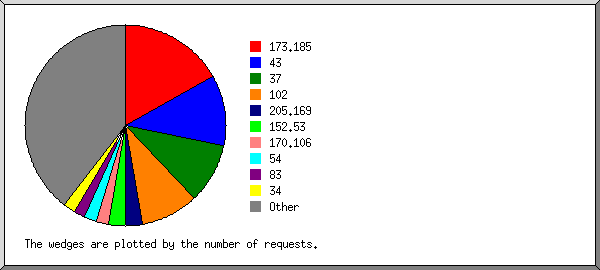
Listing the top 20 organizations by the number of requests, sorted by the number of requests.
| #reqs | %bytes | organization |
|---|---|---|
| 1510 | 23.36% | 173.185 |
| 846 | 13.13% | 37 |
| 839 | 12.03% | 102 |
| 797 | 4.21% | 43 |
| 143 | 9.26% | 205.169 |
| 120 | 0.55% | 170.106 |
| 112 | 0.43% | 49 |
| 100 | 4.52% | 34 |
| 93 | 0.49% | 176.53 |
| 87 | 1.46% | 154.28 |
| 86 | 1.16% | 91 |
| 86 | 1.46% | 154.49 |
| 82 | 0.52% | 45 |
| 64 | 0.01% | 79 |
| 64 | 3.42% | 35 |
| 62 | 0.32% | 89 |
| 60 | 0.72% | 124 |
| 52 | 0.52% | 66.249 |
| 51 | 2.61% | 104 |
| 42 | 0.16% | 20 |
| 1042 | 19.67% | [not listed: 205 organizations] |
(Go To: Top | General Summary | Monthly Report | Daily Summary | Hourly Summary | Domain Report | Organization Report | Failed Referrer Report | Referring Site Report | Browser Report | Browser Summary | Operating System Report | Status Code Report | File Size Report | File Type Report | Directory Report | Request Report)
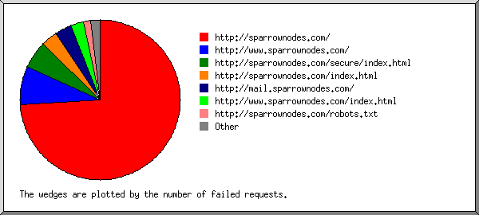
Listing referring URLs, sorted by the number of failed requests.
(Go To: Top | General Summary | Monthly Report | Daily Summary | Hourly Summary | Domain Report | Organization Report | Failed Referrer Report | Referring Site Report | Browser Report | Browser Summary | Operating System Report | Status Code Report | File Size Report | File Type Report | Directory Report | Request Report)
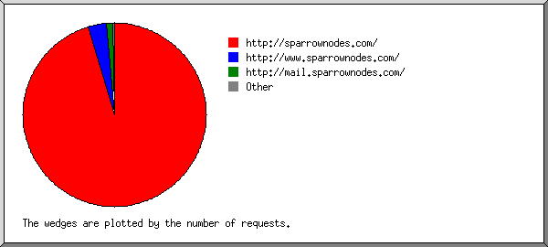
Listing referring sites, sorted by the number of requests.
| #reqs | site |
|---|---|
| 3864 | http://sparrownodes.com/ |
| 67 | http://www.sparrownodes.com/ |
| 26 | http://mail.sparrownodes.com/ |
| 6 | https://www.google.com/ |
| 1 | https://google.com/ |
(Go To: Top | General Summary | Monthly Report | Daily Summary | Hourly Summary | Domain Report | Organization Report | Failed Referrer Report | Referring Site Report | Browser Report | Browser Summary | Operating System Report | Status Code Report | File Size Report | File Type Report | Directory Report | Request Report)
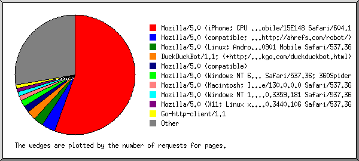
Listing the top 40 browsers by the number of requests for pages, sorted by the number of requests for pages.
| #reqs | #pages | browser |
|---|---|---|
| 1257 | 1252 | Mozilla/5.0 (iPhone; CPU iPhone OS 13_2_3 like Mac OS X) AppleWebKit/605.1.15 (KHTML, like Gecko) Version/13.0.3 Mobile/15E148 Safari/604.1 |
| 82 | 82 | Mozilla/5.0 (Linux; Android 10; LIO-AN00 Build/HUAWEILIO-AN00; wv) MicroMessenger Weixin QQ AppleWebKit/537.36 (KHTML, like Gecko) Version/4.0 Chrome/78.0.3904.62 XWEB/2692 MMWEBSDK/200901 Mobile Safari/537.36 |
| 111 | 56 | Mozilla/5.0 (compatible) |
| 1618 | 42 | Mozilla/5.0 (Macintosh; Intel Mac OS X 10_15_7) AppleWebKit/537.36 (KHTML, like Gecko) Chrome/130.0.0.0 Safari/537.36 |
| 33 | 31 | Go-http-client/1.1 |
| 60 | 30 | DuckDuckBot/1.1; (+http://duckduckgo.com/duckduckbot.html) |
| 22 | 22 | Mozilla/5.0 (Windows NT 6.1; WOW64) AppleWebKit/537.36 (KHTML, like Gecko) Chrome/50.0.2661.102 Safari/537.36; 360Spider |
| 82 | 22 | Mozilla/5.0 (iPhone; CPU iPhone OS 15_0 like Mac OS X) AppleWebKit/605.1.15 (KHTML, like Gecko) Version/15.0 Mobile/15E148 Safari/604.1 |
| 22 | 22 | Mozilla/5.0 (Windows NT 10.0; Win64; x64) AppleWebKit/537.36 (KHTML, like Gecko) Chrome/78.0.3904.108 Safari/537.36 |
| 30 | 22 | Mozilla/5.0 (Macintosh; Intel Mac OS X 10_15_7) AppleWebKit/537.36 (KHTML, like Gecko) Chrome/107.0.0.0 Safari/537.36 |
| 929 | 18 | Mozilla/5.0 (Macintosh; Intel Mac OS X 10_15_7) AppleWebKit/537.36 (KHTML, like Gecko) Chrome/134.0.0.0 Safari/537.36 |
| 26 | 16 | Mozilla/5.0 (compatible; CensysInspect/1.1; +https://about.censys.io/) |
| 30 | 15 | Mozilla/5.0 (compatible; Dataprovider.com) |
| 214 | 14 | Mozilla/5.0 (Windows NT 10.0; Win64; x64) AppleWebKit/537.36 (KHTML, like Gecko) Chrome/94.0.4606.61 Safari/537.36 |
| 31 | 10 | Mozilla/5.0 (Windows NT 6.1; Win64; x64) AppleWebKit/537.36 (KHTML, like Gecko) Chrome/83.0.4103.61 Safari/537.36 |
| 59 | 10 | Mozilla/5.0 (Windows NT 10.0; Win64; x64) AppleWebKit/537.36 (KHTML, like Gecko) Chrome/117.0.5938.132 Safari/537.36 |
| 10 | 10 | Mozilla/5.0 (X11; Linux x86_64) AppleWebKit/537.36 (KHTML, like Gecko) Chrome/131.0.0.0 Safari/537.36 |
| 52 | 9 | Mozilla/5.0 (Windows NT 10.0; Win64; x64) AppleWebKit/537.36 (KHTML, like Gecko) Chrome/79.0.3945.79 Safari/537.36 |
| 9 | 9 | Mozilla/5.0 (Windows NT 10.0; Win64; x64) AppleWebKit/537.36 (KHTML, like Gecko) Chrome/132.0.0.0 Safari/537.36 |
| 9 | 9 | Embarcadero URI Client/1.0 |
| 38 | 8 | Mozilla/5.0 (Macintosh; Intel Mac OS X 10.11; rv:52.0) Gecko/20100101 Firefox/52.0 |
| 8 | 8 | Mozilla/5.0 (Windows NT 6.1; WOW64) AppleWebKit/534.24 (KHTML, like Gecko) Chrome/11.0.696.71 Safari/534.24 |
| 7 | 7 | Mozilla/5.0 (Windows NT 10.0; Win64; x64)AppleWebKit/537.36 (KHTML, like Gecko) Chrome/66.0.3359.181 Safari/537.36 |
| 42 | 7 | Mozilla/5.0 (X11; Linux x86_64) AppleWebKit/537.36 (KHTML, like Gecko) HeadlessChrome/68.0.3440.106 Safari/537.36 |
| 7 | 7 | amphp/http-client/5.x |
| 837 | 7 | Mozilla/5.0 (iPhone; CPU iPhone OS 18_0_1 like Mac OS X) AppleWebKit/605.1.15 (KHTML, like Gecko) Version/18.0.1 Mobile/22A3370 Safari/604.1 |
| 7 | 7 | Mozilla/5.0 (Windows NT 10.0; Win64; x64) AppleWebKit/537.36 (KHTML, like Gecko) Chrome/91.0.4472.114 Safari/537.36 Edg/91.0.864.54 |
| 12 | 7 | Mozilla/5.0 (compatible; InternetMeasurement/1.0; +https://internet-measurement.com/) |
| 6 | 6 | Mozilla/5.0 (compatible; ips-agent) |
| 5 | 5 | Mozilla/5.0 (X11; Linux x86_64) AppleWebKit/537.36 (KHTML, like Gecko) Chrome/105.0.0.0 Safari/537.36 |
| 5 | 5 | Mozilla/5.0 (Windows NT 10.0; Win64; x64; rv:114.0) Gecko/20100101 Firefox/114.0 |
| 5 | 5 | Mozilla/5.0 (Windows NT 10.0; Win64; x64) AppleWebKit/537.36 (KHTML, like Gecko) Chrome/100.0.4896.75 Safari/537.36 |
| 30 | 5 | Mozilla/5.0 (iPhone13,2; U; CPU iPhone OS 14_0 like Mac OS X) AppleWebKit/602.1.50 (KHTML, like Gecko) Version/10.0 Mobile/15E148 Safari/602.1 |
| 5 | 5 | Mozilla/5.0 (Windows NT 10.0; Win64; x64) AppleWebKit/537.36 (KHTML, like Gecko) Chrome/124.0.0.0 Safari/537.36 |
| 5 | 5 | python-requests/2.32.3 |
| 5 | 5 | Mozilla/5.0 (Macintosh; Intel Mac OS X 12_5) AppleWebKit/537.36 (KHTML, like Gecko) Chrome/114.0.0.0 Safari/537.36 Vivaldi/5.3.2679.68 |
| 5 | 5 | Mozilla/5.0 (Macintosh; Intel Mac OS X 10_9_2) |
| 18 | 5 | Mozilla/5.0 (iPhone; CPU iPhone OS 14_4 like Mac OS X) AppleWebKit/605.1.15 (KHTML, like Gecko) Version/15.4 Mobile/15E148 Safari/604.1 |
| 5 | 5 | Mozilla/5.0 (Windows NT 10.0; WOW64) AppleWebKit/537.36 (KHTML, like Gecko) Chrome/114.0.0.0 Safari/537.36 Vivaldi/5.3.2679.68 |
| 5 | 5 | Pandalytics/2.0 (https://domainsbot.com/pandalytics/) |
| 534 | 227 | [not listed: 163 browsers] |
(Go To: Top | General Summary | Monthly Report | Daily Summary | Hourly Summary | Domain Report | Organization Report | Failed Referrer Report | Referring Site Report | Browser Report | Browser Summary | Operating System Report | Status Code Report | File Size Report | File Type Report | Directory Report | Request Report)
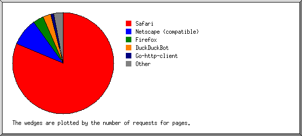
Listing browsers with at least 1 request for a page, sorted by the number of requests for pages.
| # | #reqs | #pages | browser |
|---|---|---|---|
| 1 | 5728 | 1769 | Safari |
| 2219 | 1298 | Safari/604 | |
| 3450 | 448 | Safari/537 | |
| 8 | 8 | Safari/534 | |
| 34 | 6 | Safari/602 | |
| 13 | 6 | Safari/605 | |
| 2 | 2 | Safari/536 | |
| 1 | 1 | Safari/601 | |
| 2 | 265 | 103 | Netscape (compatible) |
| 3 | 101 | 54 | Firefox |
| 38 | 8 | Firefox/52 | |
| 7 | 6 | Firefox/114 | |
| 5 | 5 | Firefox/123 | |
| 4 | 4 | Firefox/33 | |
| 3 | 3 | Firefox/70 | |
| 3 | 3 | Firefox/130 | |
| 6 | 3 | Firefox/134 | |
| 2 | 2 | Firefox/21 | |
| 2 | 2 | Firefox/89 | |
| 2 | 2 | Firefox/110 | |
| 4 | 33 | 31 | Go-http-client |
| 33 | 31 | Go-http-client/1 | |
| 5 | 60 | 30 | DuckDuckBot |
| 60 | 30 | DuckDuckBot/1 | |
| 6 | 9 | 9 | Embarcadero URI Client |
| 9 | 9 | Embarcadero URI Client/1 | |
| 7 | 9 | 9 | python-requests |
| 9 | 9 | python-requests/2 | |
| 8 | 8 | 8 | Mozilla |
| 2 | 2 | Mozilla/1 | |
| 9 | 9 | 7 | curl |
| 7 | 5 | curl/7 | |
| 2 | 2 | curl/8 | |
| 10 | 7 | 7 | amphp |
| 7 | 7 | amphp/http-client/5 | |
| 11 | 5 | 5 | Pandalytics |
| 5 | 5 | Pandalytics/2 | |
| 12 | 4 | 4 | serpstatbot |
| 4 | 4 | serpstatbot/2 | |
| 13 | 3 | 3 | 2ip bot |
| 3 | 3 | 2ip bot/1 | |
| 14 | 2 | 2 | Python |
| 2 | 2 | Python/3 | |
| 15 | 8 | 2 | CheckMarkNetwork |
| 8 | 2 | CheckMarkNetwork/1 | |
| 16 | 1 | 1 | Java |
| 1 | 1 | Java/1 | |
| 17 | 1 | 1 | NetAPI v1 |
| 18 | 1 | 1 | MSIE |
| 1 | 1 | MSIE/6 | |
| 19 | 1 | 1 | GoogleOther |
| 22 | 0 | [not listed: 5 browsers] |
(Go To: Top | General Summary | Monthly Report | Daily Summary | Hourly Summary | Domain Report | Organization Report | Failed Referrer Report | Referring Site Report | Browser Report | Browser Summary | Operating System Report | Status Code Report | File Size Report | File Type Report | Directory Report | Request Report)
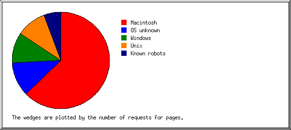
Listing operating systems, sorted by the number of requests for pages.
| # | #reqs | #pages | OS |
|---|---|---|---|
| 1 | 4939 | 1436 | Macintosh |
| 2 | 447 | 221 | OS unknown |
| 3 | 563 | 200 | Windows |
| 504 | 166 | Windows NT | |
| 52 | 30 | Unknown Windows | |
| 7 | 4 | Windows XP | |
| 4 | 296 | 165 | Unix |
| 296 | 165 | Linux | |
| 5 | 32 | 25 | Known robots |
(Go To: Top | General Summary | Monthly Report | Daily Summary | Hourly Summary | Domain Report | Organization Report | Failed Referrer Report | Referring Site Report | Browser Report | Browser Summary | Operating System Report | Status Code Report | File Size Report | File Type Report | Directory Report | Request Report)
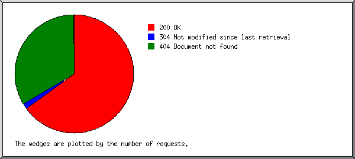
Listing status codes, sorted numerically.
| #reqs | status code |
|---|---|
| 6253 | 200 OK |
| 1 | 301 Document moved permanently |
| 85 | 304 Not modified since last retrieval |
| 1 | 403 Access forbidden |
| 3082 | 404 Document not found |
(Go To: Top | General Summary | Monthly Report | Daily Summary | Hourly Summary | Domain Report | Organization Report | Failed Referrer Report | Referring Site Report | Browser Report | Browser Summary | Operating System Report | Status Code Report | File Size Report | File Type Report | Directory Report | Request Report)
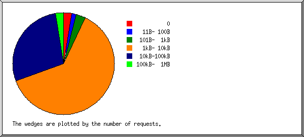
| size | #reqs | %bytes |
|---|---|---|
| 0 | 115 | |
| 1B- 10B | 0 | |
| 11B- 100B | 93 | 0.01% |
| 101B- 1kB | 185 | 0.11% |
| 1kB- 10kB | 3970 | 15.49% |
| 10kB-100kB | 1843 | 36.11% |
| 100kB- 1MB | 132 | 48.28% |
(Go To: Top | General Summary | Monthly Report | Daily Summary | Hourly Summary | Domain Report | Organization Report | Failed Referrer Report | Referring Site Report | Browser Report | Browser Summary | Operating System Report | Status Code Report | File Size Report | File Type Report | Directory Report | Request Report)
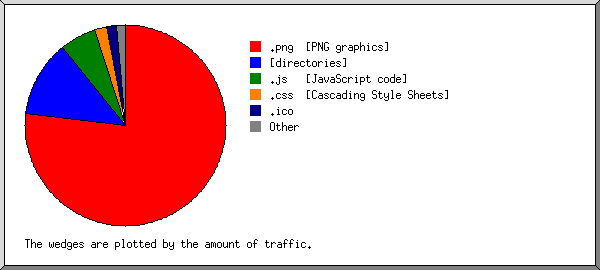
Listing extensions with at least 0.1% of the traffic, sorted by the amount of traffic.
| #reqs | %bytes | extension |
|---|---|---|
| 3161 | 76.87% | .png [PNG graphics] |
| 2083 | 13.12% | [directories] |
| 312 | 5.17% | .js [JavaScript code] |
| 368 | 1.81% | .ico |
| 240 | 1.68% | .css [Cascading Style Sheets] |
| 13 | 0.86% | .jpg [JPEG graphics] |
| 10 | 0.23% | .webp |
| 151 | 0.26% | [not listed: 6 extensions] |
(Go To: Top | General Summary | Monthly Report | Daily Summary | Hourly Summary | Domain Report | Organization Report | Failed Referrer Report | Referring Site Report | Browser Report | Browser Summary | Operating System Report | Status Code Report | File Size Report | File Type Report | Directory Report | Request Report)
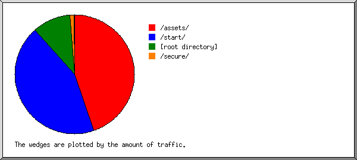
Listing directories with at least 0.01% of the traffic, sorted by the amount of traffic.
| #reqs | %bytes | directory |
|---|---|---|
| 3330 | 50.35% | /start/ |
| 456 | 36.37% | /assets/ |
| 2309 | 11.52% | [root directory] |
| 124 | 1.72% | /secure/ |
| 24 | 0.03% | /_autoindex/ |
| 95 | 0.01% | [not listed: 2 directories] |
(Go To: Top | General Summary | Monthly Report | Daily Summary | Hourly Summary | Domain Report | Organization Report | Failed Referrer Report | Referring Site Report | Browser Report | Browser Summary | Operating System Report | Status Code Report | File Size Report | File Type Report | Directory Report | Request Report)
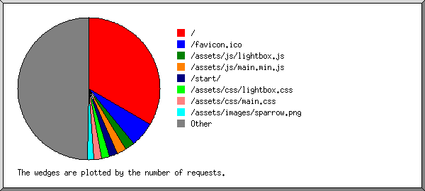
Listing files with at least 20 requests, sorted by the number of requests.
| #reqs | %bytes | last time | file |
|---|---|---|---|
| 1941 | 9.71% | Apr/30/25 7:12 AM | / |
| 21 | 0.08% | Apr/28/25 8:22 AM | /?64.64.108.36 |
| 14 | 0.06% | Mar/20/25 1:03 AM | /?135.148.195.3 |
| 368 | 1.81% | Apr/29/25 8:52 AM | /favicon.ico |
| 110 | 0.15% | Apr/29/25 3:21 PM | /assets/js/lightbox.js |
| 106 | 4.40% | Apr/29/25 3:21 PM | /assets/js/main.min.js |
| 94 | 3.22% | Apr/30/25 5:09 AM | /start/ |
| 88 | 0.06% | Apr/29/25 3:21 PM | /assets/css/lightbox.css |
| 86 | 1.30% | Apr/29/25 3:21 PM | /assets/css/main.css |
| 66 | 30.46% | Apr/24/25 12:30 AM | /assets/images/sparrow.png |
| 48 | 0.18% | Apr/28/25 3:44 PM | /secure/ |
| 3431 | 48.70% | Apr/19/25 2:39 PM | [not listed: 862 files] |